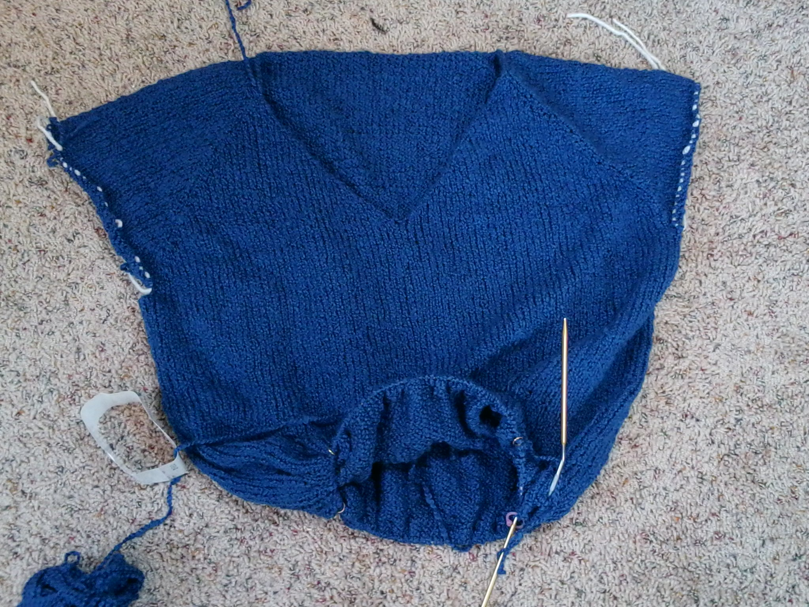
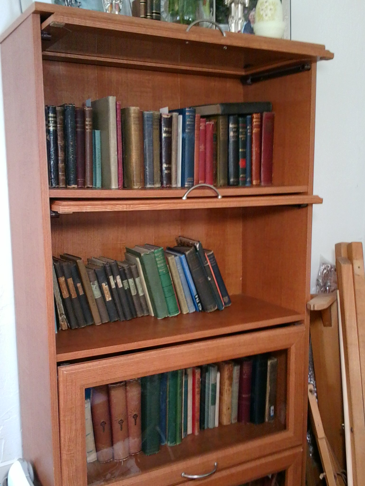
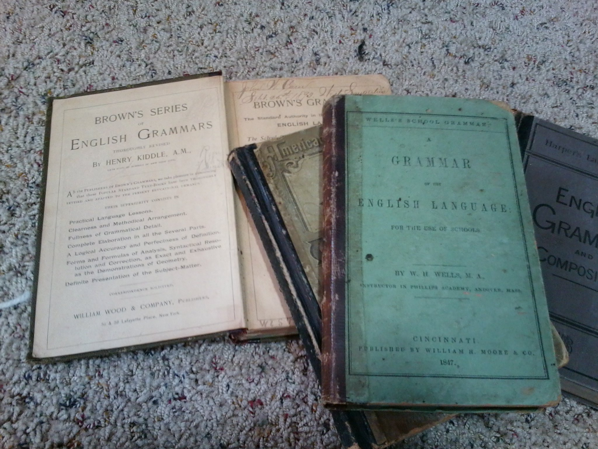

I don't particularly like talking about myself. I'll be good though and give a little information.
What I love
I love to knit and practice a number of different textile crafts; including sewing, weaving, spinning, and crochet. More accurately, I have the tools and knowledge to practice all of those crafts, but rarely have the time. Knitting is both one of my favorite crafts and one of the most portable; so it tends to get most of my time. Here's a picture of what I currently have on my needles:
(One of) My Quirks
I spend too much time associating with various craft groups to think of them as quirky. Also, I figure if there is ever an apocalypse, I have skills that will be immediately useful. However, I also collect antique grammar books. If you get a look at my bookshelves, you might wonder why I didn't say I collect books: I actively collect antique grammar books. The first antique book I have was my grandmother's first grade reader. While not actually a grammar book, it was the impetus for my collection, and I do buy those too. She's still alive and turned 95 last year.
 About Me
I'm currently a Course Developer at a company that manufacturers slot machines. (No I can't tell you how to win). I have been a lead developer for several software training guides. For the last few years, I have been focusing on online development. I have been the lead developer for recorded classes for proprietary software. I'm excited about moving into programming, although a little scared as well.


© 2014 Amy K. Foster. All Rights Reserved.